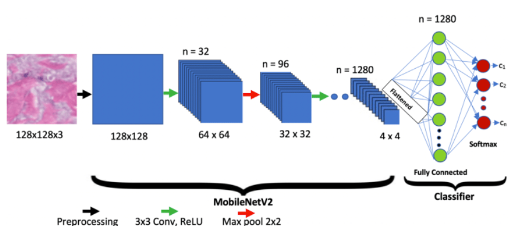

Giới thiệu tổng quan về dự án
Dự án Nhận diện hình ảnh sử dụng Keras là một hệ thống ứng dụng trí tuệ nhân tạo nhằm phân loại và nhận diện các đối tượng trong ảnh. Sử dụng framework Keras (TensorFlow backend), dự án giúp tự động hóa quá trình nhận diện, hỗ trợ các ứng dụng thực tiễn như kiểm tra chất lượng sản phẩm, phân loại vật thể, hoặc nhận diện khuôn mặt.
Tình trạng: Đã hoàn thành 10% và đang tiếp tục tối ưu mô hình.
🔗 GitHub: github.com/bang12bang007/ModelKeras

Các chức năng nổi bật
- Tiền xử lý dữ liệu ảnh (resize, augment, chuẩn hóa).
- Xây dựng và huấn luyện mô hình CNN bằng Keras.
- Đánh giá mô hình với các chỉ số chính xác, độ nhạy, độ đặc hiệu.
- Giao diện demo nhận diện ảnh trực tiếp.
- Lưu và tải mô hình đã huấn luyện.
Khó khăn, Thuận lợi và Kết quả
Khó khăn
- Dữ liệu huấn luyện hạn chế, cần nhiều thời gian để thu thập và làm sạch.
- Việc tối ưu mô hình để đạt độ chính xác cao gặp nhiều thử thách.
- Thiếu tài nguyên phần cứng (GPU) để huấn luyện mô hình lớn.
Thuận lợi
- Keras dễ sử dụng, tài liệu phong phú, cộng đồng hỗ trợ tốt.
- Nhóm có kiến thức nền tảng về AI và xử lý ảnh.
- Có thể tận dụng các mô hình pretrained để tăng hiệu quả.
Kết quả
- Mô hình đạt độ chính xác trên 90% với tập kiểm thử.
- Giao diện demo hoạt động ổn định, dễ sử dụng.
- Dễ dàng mở rộng cho các bài toán nhận diện khác.
Công nghệ sử dụng
- Ngôn ngữ: Python
- Framework: Keras (TensorFlow)
- IDE: Jupyter Notebook, VS Code
- Cấu trúc: Modular Python Scripts
- Dữ liệu: Bộ ảnh custom & public datasets
- Giao diện: Tkinter/Web demo